TPU kaplı polyester
0,45 mm çift yüz TPU laminasyon. Suya, sabuna, mineral kirece ve UV'ye dayanıklı; ftalat ve PVC içermez.
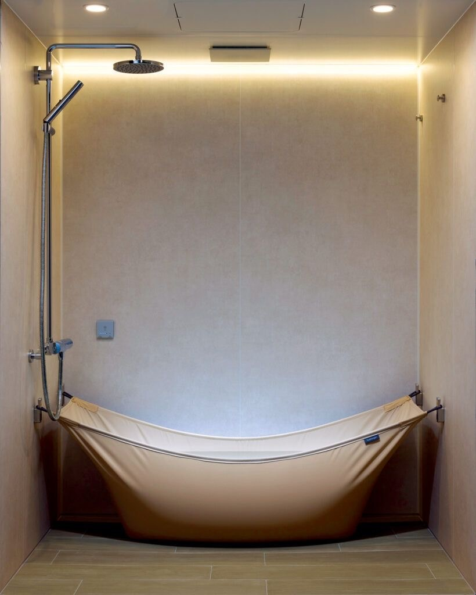
TPU kaplı polyester · 2026 koleksiyonu
Beton kırmadan, tesisat değiştirmeden, metrekare harcamadan. QWET; apartman dairesinde, balkonda ve mevcut banyonuzda 15 dakikada kurulan, kullanmadığınızda katlanıp kalkan askıda küvettir.
01 — Fikir
QWET bir tekne yelkeni gibi çalışır. İki duvara sabitlenen paslanmaz askı noktaları arasına gerilen TPU kaplı polyester, suyla dolduğunda vücudunuzu saran doğal bir hamak formu alır.
Tapa açılır, su mevcut giderden boşalır. Kumaş silinir, askıdan çıkarılır ve bir havlu kadar yer kaplayacak şekilde katlanır. Banyonuz yeniden banyo olur.
Kiracıysanız en büyük avantajı bu: 3,4 kg'lık bir rulo. Yeni evinizde askı aparatlarını takın, küvetiniz yeniden kurulsun.
02 — Neden QWET
0,45 mm çift yüz TPU laminasyon. Suya, sabuna, mineral kirece ve UV'ye dayanıklı; ftalat ve PVC içermez.
Standart bir oturmalı küvetle aynı su hacmi, üçte bir ağırlıkta. Omuz hizasına kadar dolan gerçek bir banyo.
Askı noktası başına 160 kg güvenli yük. Çift dikişli kenar bandı ve paslanmaz 316 kalite halat kilidi.
Dört vida, iki askı aparatı, bir su terazisi. Kutudan çıkan şablonla delik yerleri kendiliğinden belli olur.
Kullanılmadığında rulo halinde 12 × 70 cm. Dolap rafına, valize, bagaja sığar.
Dış mekân sınıfı kumaş ve don dayanımı sayesinde kapalı balkonlarda, terasta ve bahçede kullanılabilir.
03 — Renkler
Renk seçiminiz ön sipariş formuna otomatik işlenir.
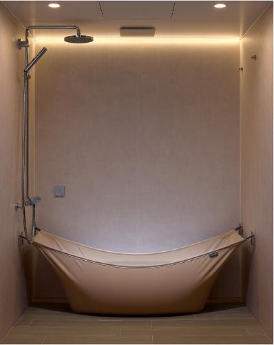
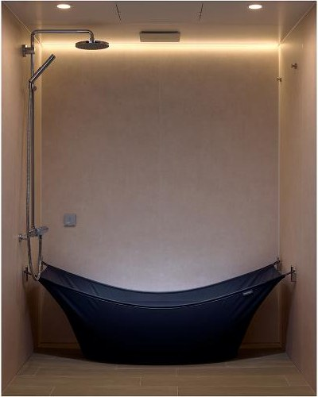
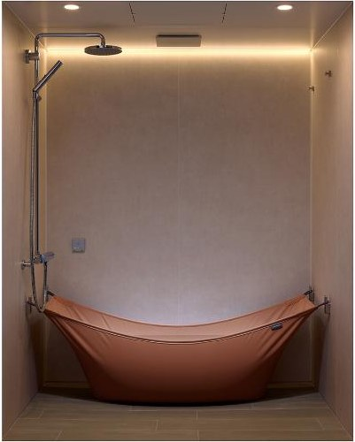
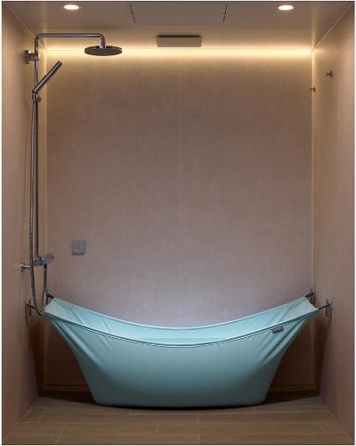
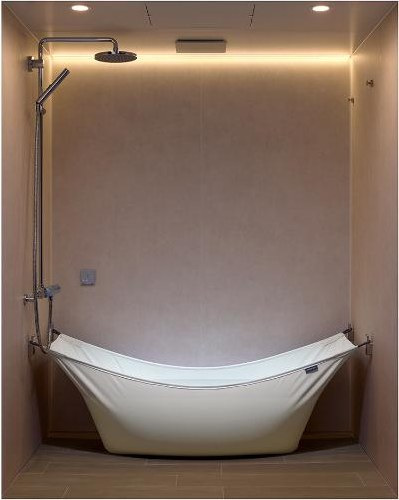
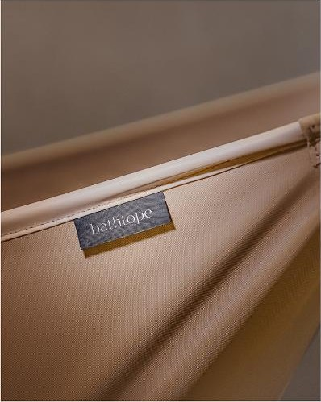
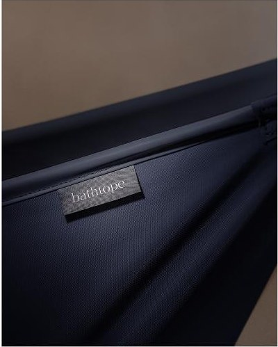
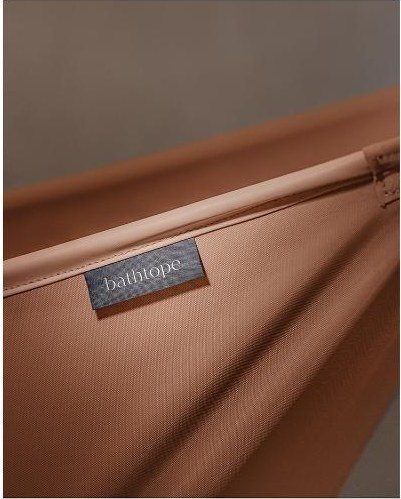
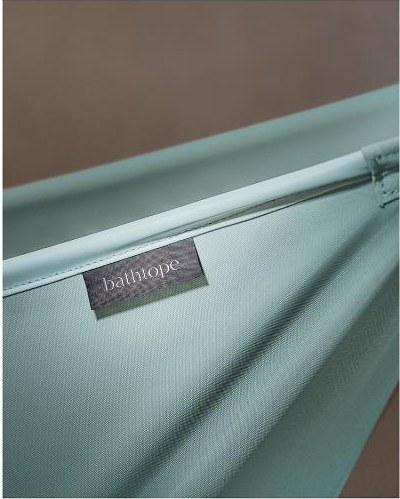
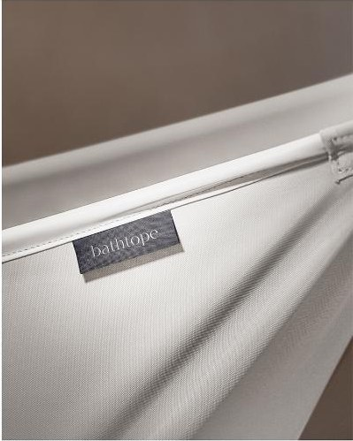
Sıcak kum tonu. Ahşap ve travertenle çalışan, ışığı yumuşatan nötr bir zemin.
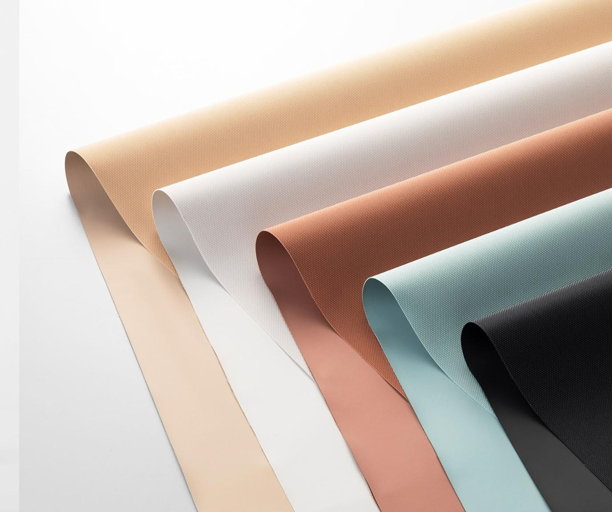
04 — Malzeme
600D dokuma polyester taşıyıcı katman, iki yüzünden termoplastik poliüretan ile lamine edilir. Ortaya çıkan yüzey suyu tutmaz, küf tutmaz ve binlerce katlanmaya rağmen kırılma izi bırakmaz.
05 — Nerede
Duş teknesinin üzerine kurulur. Mevcut gideri ve bataryayı kullanır; ek tesisat, silikon veya fayans işi gerekmez.
Kapalı balkonda yaz banyosu, terasta açık hava küveti. Don dayanımlı kumaş kışın dışarıda bırakılabilir.
4 m²'lik banyoda bile küvet konforu. Kullanılmadığında duvara toplanır, alan tamamen serbest kalır.
06 — Kurulum
Kutudan çıkan kağıt şablonu duvara yapıştırın, su terazisiyle hizalayın. Zeminden 78 cm yükseklik önerilir.
4 dkVerilen kimyasal dübel ve paslanmaz vidalarla iki askı aparatını monte edin. Fayans için elmas uç kutudadır.
8 dkKenar halatlarını kilitlere geçirin, gerdirme kolunu indirin. Tapayı takın, suyu açın. Hazır.
3 dk* Kiralık evler için delme gerektirmeyen, kapı kasasına ve duş bölmesi profiline tutunan Clamp Kit ayrıca sunulur.
07 — Teknik
| Gergin ölçü (G × D) | 168 × 78 cm |
|---|---|
| Kumaş ölçüsü | 190 × 96 cm |
| Su hacmi | 180 litre (max. 205 l) |
| Ürün ağırlığı | 3,4 kg (kumaş) + 1,1 kg (askı seti) |
| Katlanmış ölçü | Ø12 × 70 cm rulo |
| Taşıma kapasitesi | 320 kg toplam |
| Malzeme | 600D polyester + çift yüz TPU (0,45 mm) |
| Askı donanımı | AISI 316 paslanmaz çelik |
| Tahliye | Ø40 mm silikon tapa, mevcut gidere |
| Garanti | 3 yıl kumaş, 10 yıl donanım |
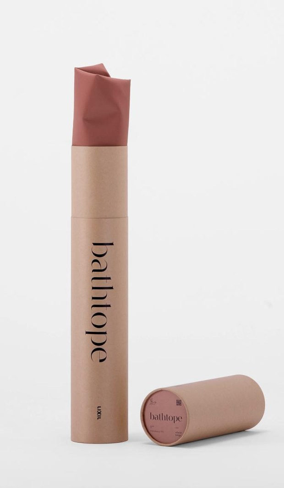
%100 geri dönüştürülmüş karton silindir ambalaj. Plastik köpük kullanılmaz.
08 — Ön sipariş
Ön sipariş şu an bağlayıcı bir ödeme içermez. Formu bırakın, üretim partiniz açıldığında size özel link ve fiyat kilidi e‑postanıza gelsin.
Teşekkürler. Ön sipariş numaranız aşağıda.
09 — Sorular
Evet. Standart sette kimyasal dübel kullanılır; ancak kiracılar için geliştirdiğimiz Clamp Kit, duş bölmesi profiline veya kapı kasasına sıkıştırma prensibiyle tutunur ve hiçbir iz bırakmaz. Ön sipariş formundaki nota "Clamp Kit" yazmanız yeterli.
Kumaşın en alçak noktasındaki Ø40 mm silikon tapa açıldığında su doğrudan altındaki mevcut duş giderine akar. Ek tesisat, pompa veya elektrik bağlantısı gerekmez. 180 litre yaklaşık 3–4 dakikada boşalır.
Toplam güvenli yük 320 kg'dır; bu, su ve kullanıcı ağırlığının toplamıdır. 180 litre su ≈ 180 kg olduğundan 140 kg'a kadar kullanıcı ağırlığı için tasarım payı bırakılmıştır. Test yükü 640 kg'da doğrulanmıştır.
TPU yüzey gözeneksizdir; küf tutunamaz. Kullanım sonrası duş başlığıyla durulayıp mikrofiber bezle silmeniz yeterlidir. Kireç için sirkeli su kullanılabilir. Çamaşır makinesine atmayın, ütülemeyin.
Kumaş −25 °C'ye kadar esnekliğini korur ve UV dayanımlıdır. Yine de ömrü uzatmak için soğuk aylarda katlayıp kılıfında saklamanızı öneririz. Askı donanımı paslanmaz olduğundan dışarıda kalabilir.
İlk üretim partisi kontenjan dolduktan sonra açılır; mevcut plana göre teslimatlar 2026 ilkbaharında başlar. Sıranız geldiğinde ödeme linki ve kesin teslim tarihi e‑posta ile gönderilir. Ön sipariş sizi bağlamaz, dilediğiniz an iptal edebilirsiniz.